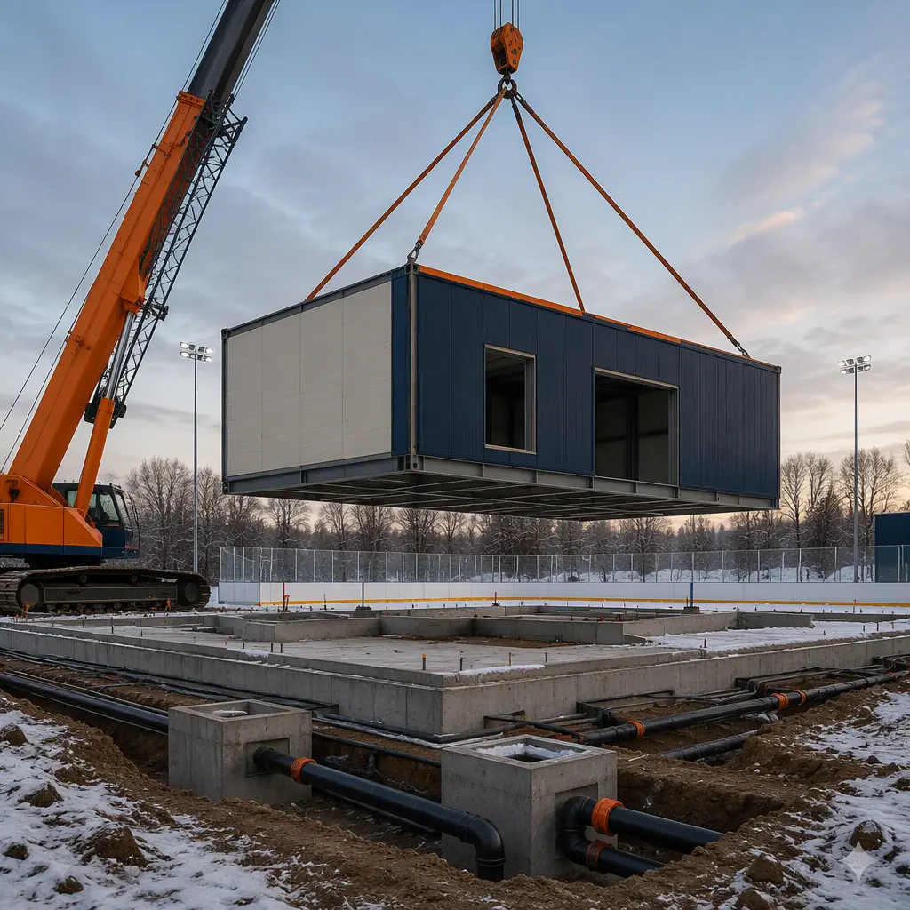
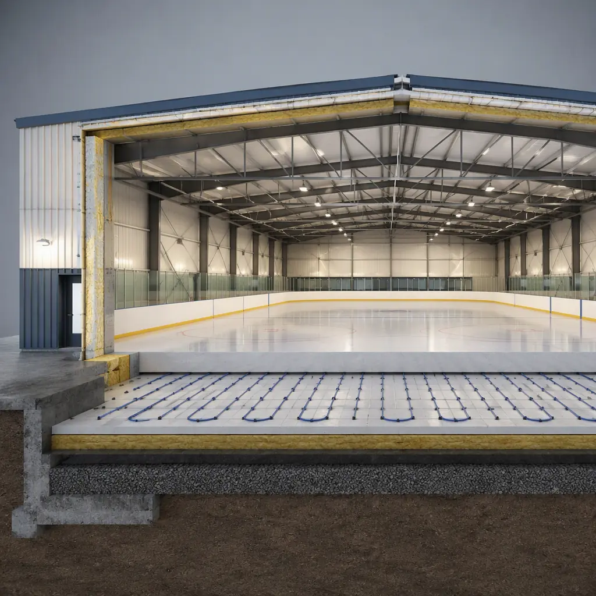
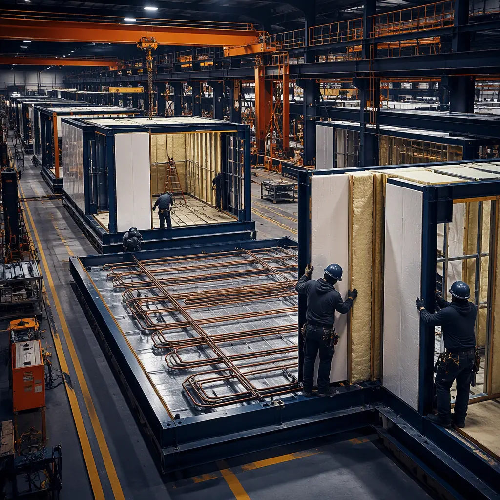

An ice rink is a building that has to hold a 20,000 sq ft sheet of ice at a precise 22–24°F surface temperature while the people inside stand in 55–60°F air — a 30-degree temperature split across one floor slab that must never fog, never drip, and never crack under thermal cycling. That combination of refrigeration engineering, vapor-barrier discipline, and structural precision makes ice arenas one of the most system-intensive building types in recreation construction, and it is exactly why factory-built delivery is transforming the sector. North America alone operates more than 3,000 indoor ice rinks, and municipalities, youth hockey associations, and private operators are all facing the same pressure: ice time is scarce, demand grows every winter, and a site-built arena takes 18–30 months to deliver. Modular construction compresses that to a 16–20 week factory production cycle with a 3–4 week on-site set, because the refrigeration piping, insulation, and vapor barrier are installed in the factory where they can be pressure-tested — not assembled by a dozen trades in the field. This guide explains the ice rink building program, how factory-built delivery satisfies refrigeration and envelope requirements, and what developers and communities should know before they build.

Why Ice Arena Developers Are Going Modular
Three factors make modular delivery a natural fit for ice arenas. First, the rink is defined by its engineered systems — refrigeration, dehumidification, insulation, and the structural frame that carries them — not by its layout. Once the sheet size, usage intensity, and climate are set, those systems are nearly identical from project to project, and repetition is what factory production does best. Second, the schedule is commercially critical: ice time is the product, and every month of construction delay is a month of youth hockey registrations, figure skating lessons, and public skating revenue that never comes back. Third, the risk is concentrated in a handful of systems that fail inspections — the refrigeration slab, the vapor barrier, and the dehumidification plant — and all three are dramatically more reliable when factory-installed and pre-tested than when coordinated by multiple site trades. The quality-gate discipline that makes factory testing reliable — documented inspections at every stage — is the same system MODURA applies across all building types, covered in our factory quality control guide.
Arena developers also face a permitting environment that punishes schedule uncertainty: use permits, environmental review, and community approvals can expire while a conventional building creeps toward completion. A committed factory schedule keeps those approvals alive. The structural foundation for these buildings — steel frames engineered for heavy concentrated loads and wide clear spans — is the same logic MODURA applies to industrial buildings, detailed in our modular steel construction guide.
The Ice Rink Building Program: Sheet Size, Zones, and Loads
An ice arena is a long-span building with a tightly specified interior. The standard program for a community or commercial facility breaks down as follows:
- The ice sheet (the core product). The standard rink is 85×200 ft (NHL regulation, 17,000 sq ft) or 85×185 ft for international play. Community arenas commonly run 80×160 ft to 85×200 ft, with an additional 8–12 ft of apron around the boards for officials, benches, and spectator clearance — driving a building footprint of roughly 24,000–30,000 sq ft for a single sheet.
- The refrigeration slab (the non-negotiable). A 5–6 in concrete slab embedded with 8,000–12,000 ft of 1–1.25 in refrigerant or brine piping, with 4–6 in of rigid insulation below and a continuous vapor barrier — the slab holds ice at 22–24°F while the ground below stays above 40°F to prevent frost heave.
- Dehumidification and ventilation (15–25% of project cost). Indoor arenas need dew-point control to prevent ceiling condensation and fog; a typical single-sheet arena moves 15,000–25,000 CFM of air with a dehumidification plant sized to hold relative humidity at 40–50% even with 500+ skaters exhaling moisture.
- The building envelope. 4–6 in insulated wall and roof panels with vapor barriers on the warm side, engineered to keep the interior at 50–60°F without condensation at any point in the assembly.
- Support spaces. Locker rooms, skate rental and sharpening, pro shop, concessions, spectator seating, and mechanical rooms — arranged so public circulation never crosses the ice surface.
Every element maps onto factory production. Refrigeration piping is installed and pressure-tested in the factory, insulation and vapor barriers are laid with sealed joints before shipment, and the dehumidification plant is pre-fitted and pre-commissioned rather than field-assembled. For the structural engineering that carries these heavy systems — long-span roof trusses, column spacing, and load paths — our modular building envelope systems guide covers the enclosure details.

Refrigeration and the Frozen Slab: Engineering the Ice
The ice sheet is the building's most important engineered system. A regulation rink holds roughly 60,000–70,000 gallons of ice-equivalent water, frozen and maintained by a refrigeration plant that typically uses 2–4 screw or scroll compressors with a total capacity of 50–120 tons of refrigeration depending on climate and usage. The system circulates a calcium chloride brine or direct-refrigerant through the slab piping at 16–18°F supply temperature, holding the ice surface at 22–24°F for hockey and figure skating. The slab itself is the critical piece: 5–6 in of concrete with the piping grid laid at 3–4 in centers, resting on 4–6 in of extruded polystyrene insulation and a continuous vapor barrier. If the vapor barrier fails, ground moisture migrates up, freezes under the slab, and heaves the ice surface — the single most common catastrophic failure in rink construction.
Factory-built rinks engineer this in rather than commissioning it in the field. The piping grid is laid on a jig in the factory, pressure-tested to 1.5× operating pressure, and documented before the concrete is poured; the insulation and vapor barrier are installed as sealed factory assemblies rather than field-lapped membranes. The owner receives a refrigeration slab that has already proven it holds pressure — not a system waiting for a leak hunt in the field. The same factory-installed approach applies to the mechanical systems in any high-performance building, which we cover in our modular HVAC and indoor air quality guide. Refrigeration does not stop at the slab: the plant room, brine piping runs, and controls are all pre-fitted in the factory module, and the whole system is factory-commissioned before shipment.
Envelope and Dehumidification: Keeping Fog Off the Glass
Fog is the visible enemy of an indoor rink. With 300–600 skaters on the ice on a busy Saturday, each exhaling roughly 0.3 lb of moisture per hour, the arena interior can see moisture loads of 100–200 lb per hour — enough to saturate the air and condense on the ceiling and glass without active control. The building envelope and the dehumidification plant work together: insulated panels with vapor barriers keep the structure above dew point, while a dedicated dehumidification system (typically desiccant or chilled-water based) holds interior humidity at 40–50% RH. For a single-sheet arena, this means 15,000–25,000 CFM of conditioned air with a plant sized to the peak moisture load — and the whole system must be engineered as one assembly, because envelope and air system failures compound each other.
This is where modular construction earns its keep, because both envelope performance and air-system performance depend on details that are miserable to get right in the field: continuous vapor-barrier laps, sealed panel joints, no thermal bridges at penetrations, and air balancing matched to the moisture load. In the factory, those details are built and tested as part of the module; on site, they are done once, at a workstation, with QC sign-off. The enclosure engineering principles — insulation continuity, vapor control, and air sealing — are the same ones MODURA applies to climate-controlled buildings of all kinds, documented in our modular thermal insulation guide.

Factory Production: Piping Grids, Pre-Tested Plants, and the 16-Week Schedule
The rink is built indoors because refrigeration and envelope quality are controlled indoors. Refrigeration piping is laid on jigs, pressure-tested, and documented; insulation and vapor barriers are installed with sealed joints; and the plant room is fitted, powered up, and pre-commissioned before the module ships. Every connection is documented in the submittal package — the same production-line discipline of weld verification, dimensional checks, and MEP testing at defined gates that MODURA documents in our factory quality control guide. Weather independence matters for rink projects too: an arena under construction in a northern climate does not lose its schedule to frozen ground or winter shutdowns, because the building work happens in a climate-controlled factory and the site work is limited to foundations, utilities, and a short set window.
On site, the set is measured in weeks, not seasons: foundations and refrigeration utility runs are prepared in parallel with factory production, and the modules are set, joined, and interconnected over a 3–4 week window. The concrete ice slab is then poured (5–6 in over the factory-installed piping grid), and the refrigeration plant is connected and commissioned — typically reaching first ice 4–6 weeks after module set. The full schedule comparison of factory-built versus conventional delivery is in our modular construction timeline analysis.
Cost and Timeline Benchmarks for Ice Arenas
Ice arena economics are driven by systems cost: the refrigeration plant, slab, dehumidification, and envelope together account for 35–50% of total project cost, which is why the systems-first approach of modular delivery has such a large impact. For a typical single-sheet community arena (roughly 25,000–30,000 sq ft including support spaces), modular delivery lands at $220–320 per sq ft complete — or $4.5–7.5 million fully built — compared with $280–400 per sq ft for equivalent site-built construction. The 20–30% saving comes from factory labor efficiency, compressed schedule, and the elimination of specialty-contractor coordination risk.
| Benchmark | Site-Built Arena | Modular Arena |
|---|---|---|
| Design through first ice | 18–30 months | 9–12 months |
| Building cost (single sheet) | $280–400 / sq ft | $220–320 / sq ft |
| Refrigeration slab | Field-laid piping, tested on site | Factory-laid on jig, pre-tested |
| Vapor barrier / insulation | Field-lapped membranes | Factory-sealed assemblies |
| On-site set window | N/A (sequential trades) | 3–4 weeks |
| Relocatability | None | Partial — envelope modules reusable |
For municipalities, the calculus adds community value: a modular arena can be delivered while the existing facility stays in service, set in a matter of weeks, and expanded with additional sheets as youth programs grow. Communities should structure procurement around performance — committed opening date, documented refrigeration testing, guaranteed ice-surface temperature — using the framework in our modular RFP and procurement guide. Total lifecycle economics, including the refrigeration plant that dominates operating cost, are covered in our total cost planning guide, and per-square-foot benchmarks across building types are in our modular construction cost guide.
An ice rink fails on systems, not walls: the refrigeration slab, the vapor barrier, and the dehumidification plant. Factory production is the only delivery method where those three systems are built, tested, and documented as one integrated building — before it ever reaches the site.
Compliance, Zoning, and the Business Case
Ice arenas carry a heavier compliance load than almost any comparable recreation building. The approval chain typically includes: zoning (arenas are often conditional uses requiring public hearings), environmental review of the refrigeration system (refrigerant management per EPA regulations on high-GWP refrigerants), energy code compliance for the envelope, and building code review of the long-span roof structure and fire assemblies. A factory-built arena helps at every step because the engineering documentation — refrigeration capacities, envelope U-values, structural ratings — exists as a complete submittal package from day one, rather than being assembled after construction. The approval sequence for factory-built structures is covered in our permitting and zoning guide, and fire-resistance requirements for the occupancy are covered in our modular fire safety guide.
On the business side, ice arenas are a durable recreation model: youth hockey registrations, figure skating, public skating, and tournaments compound year-round, and multi-sheet facilities increasingly operate as year-round sports businesses rather than seasonal rinks. Communities and private operators planning indoor recreation will find the same factory-built delivery that serves aquatic and community recreation centers and gym and fitness facilities, with the refrigeration and envelope systems specified to arena standards. Whichever path applies, the key is to specify the systems first — sheet size, usage intensity, climate, refrigerant choice — and let the factory build the building around them.